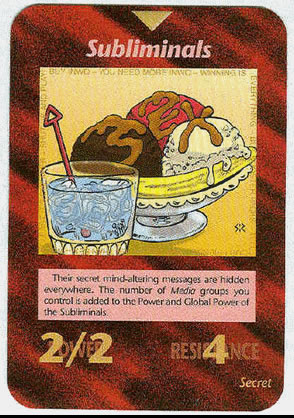

MENSAGENS SUBLIMINARES
Subliminals (Mensagens Subliminares): A parte inferior da carta diz: "As mensagem secretas deles de alteração da mente estão escondidas por toda a parte. O número de grupos de Mídia que você controla é somado ao Poder e Poder Global das mensagens subliminares."
Veja mais em: http://nwocg.blogspot.com.br/2011/06/subliminals-mensagens-subliminares.html
O que é mensagem subliminar?
As Mensagens Subliminares podem ser enviadas para nós na forma visual ou auditiva, sempre na tentativa de persuasão mental, ou seja para enganar ou ludibriar nossa mente consciente, é direcionada ao subconsciente e armazenada na mente inconsciente. Na realidade é uma "arte", muito empregada em publicidade ou propaganda propositadamente para induzir o consumo.
As Mensagens Subliminares são como uma hipnose indireta, embora não possamos, conscientemente, identificar esta absorção da informação, o nosso subconsciente capta-a e ela é assimilada sem nenhum bloqueio.
Definimos Mensagens Subliminares, como sendo informações ocultas, abaixo da capacidade de percepção consciente das pessoas, influenciando o comportamento, atitudes, motivação, capacidade de aceitação e escolha de um produto.
Importante que se diga, que uma vez que o indivíduo assimilou inconscientemente uma mensagem subliminar, ela fica latente em sua mente até que no momento certo é ativado, atua como um vírus de computador, entra em ação sempre na hora exata.
Cuidado com as mensagens subliminares
As crianças são facilmente induzidas pelas mensagens subliminares, uma vez que passam horas na frente de uma televisão, e as mensagens subliminares estão embutidas até mesmo em desenhos animados, influenciando no desvio de comportamento e influenciando na vida das pessoas.
É comum vermos nos filmes personagens fazendo tramas, trapaças, falando em lavagem cerebral, guerra psicológica, violência, drogas, promovendo um verdadeiro confronto com o próprio eu interno das pessoas, estimulando o lado "negativo" do Ser Humano, induzindo de forma covarde e silenciosa os espectadores.
Sempre o espectador se identifica mais com um personagem e, no desenrolar dos acontecimentos, o espectador começa a agir e tenta assumir até mesmo a personalidade do personagem, no modo de se vestir, caminhar, falar e agir; se transformando até em super heróis ou ninjas. Infelizmente a televisão tem sido responsável pela mudança de comportamento da sociedade, promovendo a desunião dos casais, destruição de milhares de lares, levando os jovens a conhecerem as drogas e a prostituição. Quando não se tinha televisores e vídeos cassetes e etc. o comportamento da humanidade era diferente, estamos pagando o preço do progresso e do desenvolvimento tecnológico. Cabe a cada um de nós decidir o que assistir na TV.
A Internet está sendo um grande canal de utilização de mensagens subliminares, inseridos em banners.
Interessante salientar que num determinado período da história dos EUA, foi estimulado o consumo de espinafre na população, com o intuito de diminuir a onda de anemia que se abatia naquele País, então criaram o personagem Marinheiro Popay e a Olivia Palito, que até hoje está em cartaz, a trama da estória era o ciúmes do Marinheiro por sua namorada, e como mensagem subliminar vinha o espinafre, para o personagem infantil ficar forte e enfrentar seus rivais, mas pouca gente atentou ao detalhe do cachimbo do Popay que estimulava e estimula até hoje subliminarmente o consumo do tabaco.
Os poderes da comunicação subliminar são muito grande; nos estádios de futebol são colocados estrategicamente propagandas, conforme a câmera acompanha uma jogada, as propagandas aparecem centenas de vezes no fundo, a atenção do espectador está no jogo e as mensagens subliminares vão aparecendo, mas a televisão utiliza muitos recursos de mensagens subliminares e de indução de massa a todo instante, não só em propagandas veiculadas na telinha, mas em programas de auditório também, um apresentador de programa tem forte influência na tomada de decisão dos telespectadores, se estes tem simpatia pelo apresentador(a), fatalmente serão influenciados pelos produtos divulgados pelo mesmo, aceitando até a opinião e considerações do apresentador, numa abordagem de tema, podendo ser um formador de opinião. É muito comum um apresentador lançar produtos com sua marca, pois ele sabe da tamanha influência que exerce perante a opinião pública; sabendo disso, os apresentadores deveriam refletir melhor e utilizar do poder de comunicação que possuem para melhorarem as condições de vida da população e promoverem a higienização mental familiar.
O princípio de tudo está em nosso subconsciente, que registra fielmente tudo em nossa vida, o que vemos, sentimos, pensamos, sonhamos, ouvimos, falamos... Tudo."
Interessante isso ;
Existem também mensagens subliminares em músicas e vídeos , achei um trecho explicando como funciona:
No caso dos vídeos, o que geralmente se encontra é a inserção de subliminares em apenas alguns quadros, sem que quem esteja vendo perceba a mensagem no tempo normal do vídeo (propaganda televisiva, filme, etc.), fazendo com que a mensagem inserida seja "gravada" pelo nosso subconsciente. O que acontece é que quando se grava um vídeo, as imagens são divididas em quadros e, pelo o que eu sei, por segundo, existem cerca de 30 quadros. Sendo assim, se colocarem uma mensagem do tipo "use tal produto" ou "você quer tal coisa", logo essa mensagem será lida pelo seu subconsciente e você irá agir de acordo com o que a mensagem pede como se você mesmo estivesse querendo aquele produto por decisão própria.
Nas músicas, posso citar três formas de como se usam subliminares: uma é conhecida por backward masking, em que se grava uma fala e se coloca na música, mas invertida. Você não entenderia nada se ouvisse mas seu subconsciente sim. A segunda é bem interessante: existem freqüências inaudíveis ao ouvido humano, como aquelas que só os cães, por exemplo, que possuem a audição mais apurada que a nossa, podem ouvir. Então, coloca-se algo nessa faixa de freqüência da música e você certamente não vai ouvir, menos seu subconsciente, que registra tudo fielmente. A terceira é a mais sem graça delas: simplesmente colocam uma fala dum jeito tão rápido que você também não iria nem perceber Mas seu subconsciente... sim. "
Nossa , somos totalmente influenciados pelo nosso subconsciente ! como pode? , nosso cérebro é uma coisa muito incrivel ..
Clique aqui e veja um top 10 de mensagens subliminares.
Veja a seguir um vídeo sobre mensagens subliminares: